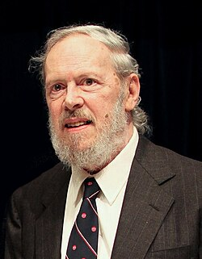
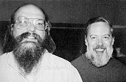
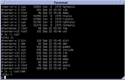
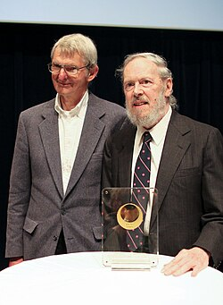

Dennis Ritchie | |
|---|---|
 Ritchie in 2011 | |
| Born | Dennis MacAlistair Ritchie September 9, 1941 Bronxville, New York, U.S. |
| Died | c. October 12, 2011 (aged 70) |
| Education | Harvard University (BS) |
| Known for | ALTRAN B BCPL C Multics Unix |
| Awards | IEEE Emanuel R. Piore Award (1982)[1] Turing Award (1983) National Medal of Technology (1998) IEEE Richard W. Hamming Medal (1990) Computer Pioneer Award (1994) Computer History Museum Fellow (1997)[2] Harold Pender Award (2003) Japan Prize (2011) |
| Scientific career | |
| Fields | Computer science |
| Institutions | Lucent Technologies Bell Labs |
| Patrick C. Fischer | |
| Website | www |
Dennis MacAlistair Ritchie (September 9, 1941 – c. October 12, 2011) was an American computer scientist.[3] He created, together with long-time colleague Ken Thompson, the Unix operating system, C programming language, and B programming language.[3]
Dennis Ritchie was born in Bronxville, New York. His father was Alistair E. Ritchie, a longtime Bell Labs scientist and co-author of The Design of Switching Circuits[4] on switching circuit theory.[5] As a child, Dennis moved with his family to Summit, New Jersey, where he graduated from Summit High School.[6] He graduated from Harvard University with degrees in physics and applied mathematics in 1963.[5]


/usr/dmrIn 1967, Ritchie began working at the Bell Labs Computing Science Research Center. In 1968, he completed a draft of his PhD thesis on "Computational Complexity and Program Structure" at Harvard under the supervision of Patrick C. Fischer. However, Ritchie never officially received his PhD degree.[7][8] In 2020, the Computer History Museum worked with Ritchie's family and Fischer's family and found a copy of the lost dissertation.[8][9]
During the 1960s, Ritchie and Ken Thompson worked on the Multics operating system at Bell Labs. Thompson then found an old PDP-7 machine and developed his own application programs and operating system from scratch, aided by Ritchie and others. In 1970, Brian Kernighan suggested the name "Unix", a pun on the name "Multics".[10] To supplement assembly language with a system-level programming language, Thompson created B. Later, B was replaced by C, created by Ritchie, who continued to contribute to the development of Unix and C for many years.[11]
During the 1970s, Ritchie collaborated with James Reeds and Robert Morris on a ciphertext-only attack on the M-209 US cipher machine that could solve messages of at least 2000–2500 letters.[12] Ritchie relates that, after discussions with the National Security Agency, the authors decided not to publish it, as they were told that the principle applied to machines still in use by foreign governments.[12]
Ritchie was also involved with the development of the operating systems Plan 9 and Inferno, and the programming language Limbo.
As part of an AT&T restructuring in the mid-1990s, Ritchie was transferred to Lucent Technologies, where he retired in 2007 as head of System Software Research Department.[13]
Ritchie created the C programming language and was one of the developers of the Unix operating system. With Brian Kernighan, he co-wrote the book The C Programming Language, which is often referred to as K&R after their initials. Ritchie worked together with Ken Thompson, who is credited with writing the original version of Unix; one of Ritchie's contributions to Unix was its porting to different machines and platforms.[14] They were so influential on Research Unix that Doug McIlroy later wrote, "The names of Ritchie and Thompson may safely be assumed to be attached to almost everything not otherwise attributed."[15]
Nowadays, the C language is widely used in application, operating system, and embedded system development, and its influence is seen in most modern programming languages. C is a low-level language with constructs closely translating to the hardware's instruction set. However, it is not tied to any given hardware, making it easy to write programs on any machine that supports C.[16] Moreover, C is a high-level programming language with constructs mapping to data structures in application software.
C influenced several other languages and derivatives, such as C++, Objective-C used by Apple, C# used by Microsoft, and Java used in corporate environments extensively and by Android. Ritchie and Thompson used C to write Unix, which has been influential in establishing many computing concepts and principles that are adopted widely.
In an interview from 1999, Ritchie clarified that he saw Linux and Berkeley Software Distribution (BSD) operating systems as a continuation of the basis of the Unix operating system, and as derivatives of Unix:[17]
I think the Linux phenomenon is quite delightful, because it draws so strongly on the basis that Unix provided. Linux seems to be among the healthiest of the direct Unix derivatives, though there are also the various BSD systems as well as the more official offerings from the workstation and mainframe manufacturers.
In the same interview, he stated that he viewed Unix and Linux as "the continuation of ideas that were started by Ken and me and many others, many years ago."[17]
In 1983, Ritchie and Thompson received the Turing Award "for their development of generic operating systems theory and specifically for the implementation of the UNIX operating system".[18] Ritchie's Turing Award lecture was titled "Reflections on Software Research".[19] In 1990, both Ritchie and Thompson received the IEEE Richard W. Hamming Medal from the Institute of Electrical and Electronics Engineers (IEEE), "for the origination of the UNIX operating system and the C programming language".[20]
In 1997, both Ritchie and Thompson were made Fellows of the Computer History Museum, "for co-creation of the UNIX operating system, and for development of the C programming language."[21]
On April 21, 1999, Thompson and Ritchie jointly received the National Medal of Technology of 1998 from President Bill Clinton for co-inventing the UNIX operating system and the C programming language which, according to the citation for the medal, "led to enormous advances in computer hardware, software, and networking systems and stimulated growth of an entire industry, thereby enhancing American leadership in the Information Age".[22][23]
In 2005, the Industrial Research Institute awarded Ritchie its Achievement Award in recognition of his contribution to science and technology, and to society generally, with his development of the Unix operating system.[24]
In 2011, Ritchie, along with Thompson, was awarded the Japan Prize for Information and Communications for his work in the development of the Unix operating system.[25]

Ritchie was found dead on October 12, 2011, at the age of 70 at his home in Berkeley Heights, New Jersey, where he lived alone.[3] First news of his death came from his former colleague, Rob Pike.[26][27][28] He had been in frail health for several years following treatment for prostate cancer and heart disease.[3][26][29][30]
Following Ritchie's death, computer historian Paul E. Ceruzzi stated:[31]
Ritchie was under the radar. His name was not a household name at all, but... if you had a microscope and could look in a computer, you'd see his work everywhere inside.
In an interview shortly after Ritchie's death, long-time colleague Brian Kernighan said Ritchie never expected C to be so significant.[32] Kernighan told The New York Times "The tools that Dennis built—and their direct descendants—run pretty much everything today."[33] Kernighan reminded readers of how important a role C and Unix had played in the development of later high-profile projects, such as the iPhone.[34][35] Other testimonials to his influence followed.[36][37][38][39]
Reflecting upon his death, a commentator compared the relative importance of Steve Jobs and Ritchie, concluding that "[Ritchie's] work played a key role in spawning the technological revolution of the last forty years—including technology on which Apple went on to build its fortune."[40] Another commentator said, "Ritchie, on the other hand, invented and co-invented two key software technologies which make up the DNA of effectively every single computer software product we use directly or even indirectly in the modern age. It sounds like a wild claim, but it really is true."[41] Another said, "many in computer science and related fields knew of Ritchie's importance to the growth and development of, well, everything to do with computing,..."[42]
The Fedora 16 Linux distribution, which was released about a month after he died, was dedicated to his memory.[43] FreeBSD 9.0, released January 12, 2012, was also dedicated in his memory.[44]
Asteroid 294727 Dennisritchie, discovered by astronomers Tom Glinos and David H. Levy in 2008, was named in his memory.[45] The official naming citation was published by the Minor Planet Center on 7 February 2012 (Minor Planet Circulars (M.P.C.) 78272).[46]
Ritchie has been the author or contributor to about 50 academic papers, books, and textbooks which have had over 15,000 citations.[48]
Here are some of his most cited works:
Dennis M. Ritchie, who helped shape the modern digital era by creating software tools that power things as diverse as search engines like Google and smartphones, was found dead on Wednesday at his home in Berkeley Heights, N.J. He was 70. Mr. Ritchie, who lived alone, was in frail health in recent years after treatment for prostate cancer and heart disease, said his brother Bill.
Members of the Technical Staff, Bell Telephone Laboratories
Ritchie, 69, has lived in Berkeley Heights for 15 years. He was born in Bronxville, New York, grew up in Summit and attended Summit High School before going to Harvard University.
Pioneering computer scientist Dennis Ritchie has died after a long illness. ... The first news of Dr Ritchie's death came via Rob Pike, a former colleague who worked with him at Bell Labs. Mr Ritchie's passing was then confirmed in a statement from Alcatel-Lucent which now owns Bell Labs.
I just heard that, after a long illness, Dennis Ritchie (dmr) died at home this weekend. I have no more information.
Not known: Alcatel-Lucent confirmed his death to The Associated Press but would not disclose the cause of death or when Ritchie died.
Q Did Dennis Ritchie or you ever think C would become so popular? [Kernighan] I don't think that at the time Dennis worked on Unix and C anyone thought these would become as big as they did. Unix, at that time, was a research project inside Bell Labs.
Dennis Ritchie, the inventor of the C language and co-inventor of the Unix operating system, died a few days after Steve Jobs. He was far more influential than Jobs.
The book came off the shelf in service of teaching another generation a simple, elegant way to program that allows the developer to be directly in touch with the innards of the computer. The lowly integer variable—int—has grown in size over the years as computers have grown, but the C language and its sparse, clean, coding style live on. For that we all owe a lot to Dennis Ritchie.
Now that digital devices are fashion items, it is easy to forget what really accounts for their near-magical properties. Without the operating systems which tell their different physical bits what to do, and without the languages in which these commands are couched, the latest iSomething would be a pretty but empty receptacle. The gizmos of the digital age owe a part of their numeric souls to Dennis Ritchie and John McCarthy.
Four decades ago, Ken Thompson, the late Dennis Ritchie, and others at AT&T's Bell Laboratories developed Unix, which turned out to be one of the most influential pieces of software ever written. Their work on this operating system had to be done on the sly, though, because their employer had recently backed away from operating-systems research.
UNIX, to the development of which Ritchie greatly contributed, and whose C made it possible it to be ported to other machines, is, even today, in its different avatars, the de facto OS for anything that is mission critical. Solaris, AIX, HP-UX, Linux—all these are derived from UNIX.
{kind=link}
{kind=link}
{kind=link}
{kind=link}
{kind=link}
_Receiving_Japan_Prize.jpeg){kind=link}